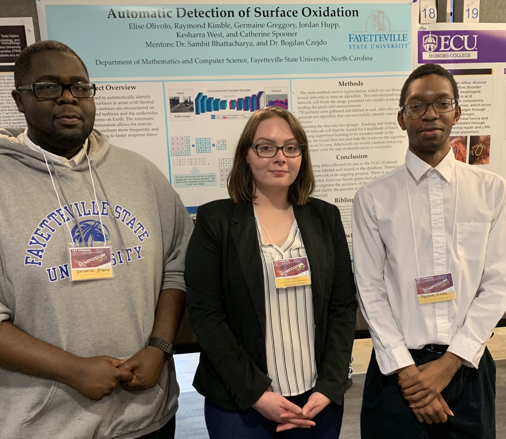
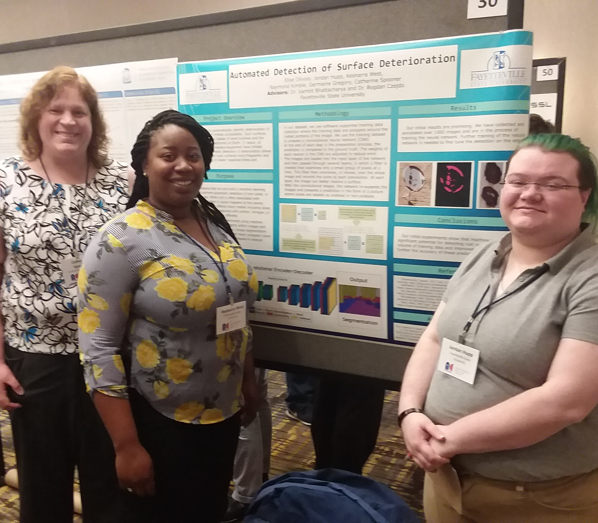
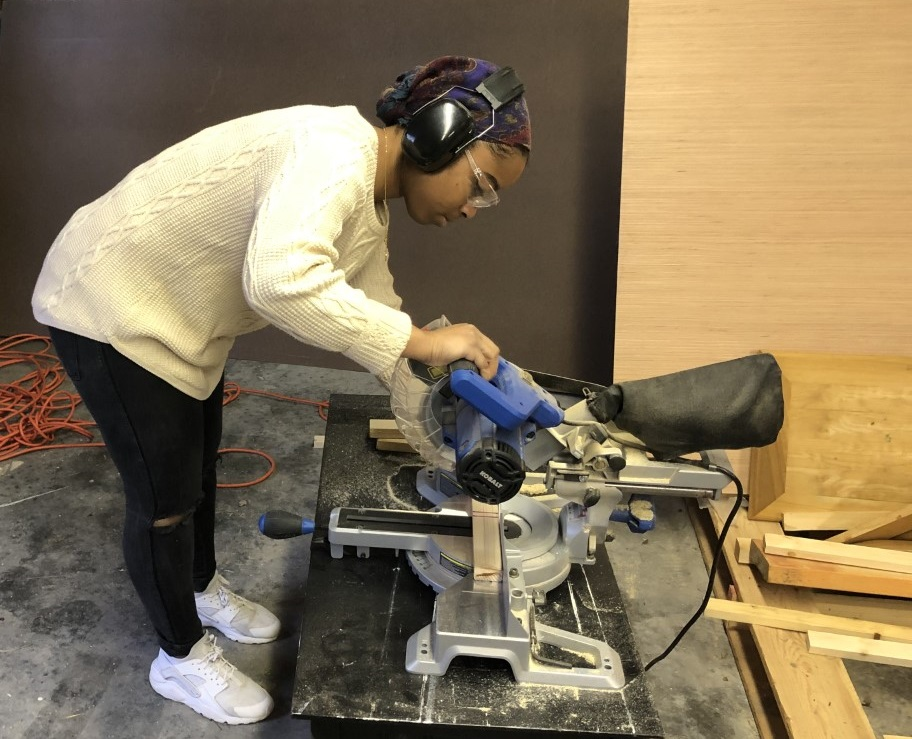
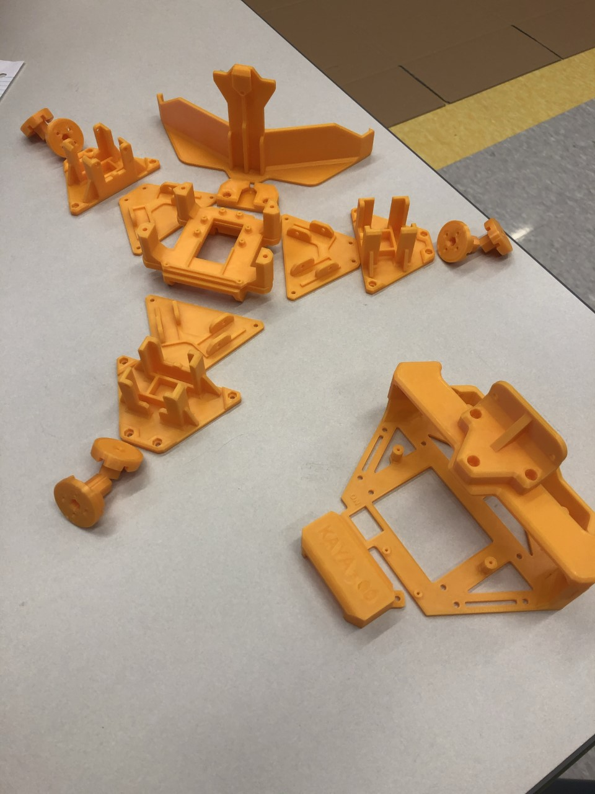
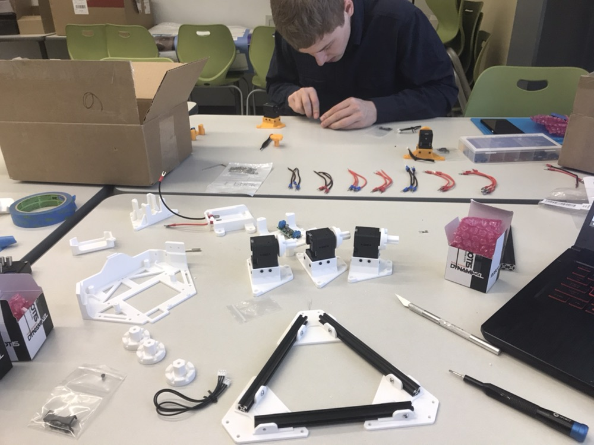
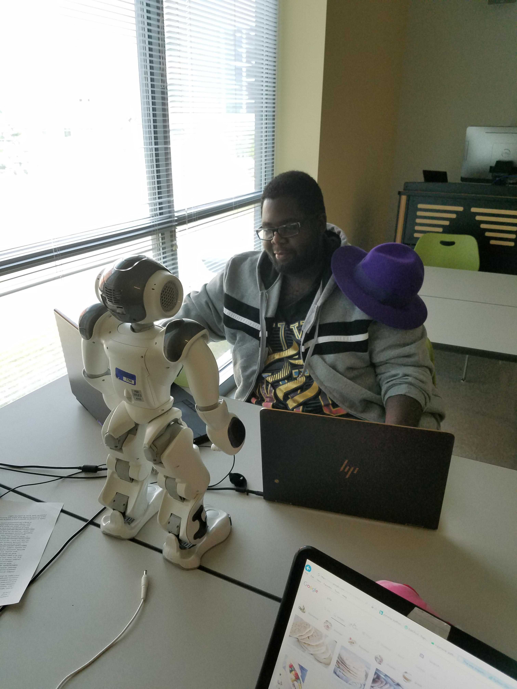
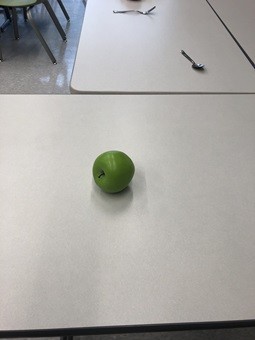
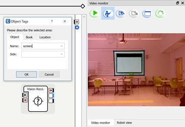

Past Projects
NSF Tip Geodata
Funded by the National Science Foundation
About the project
The Historically Black Colleges and Universities Undergraduate Program (HBCU-UP) through Targeted Infusion Projects supports the development, implementation, and study of evidence-based innovative models and approaches for improving the preparation and success of HBCU undergraduate students so that they may pursue STEM graduate programs and/or careers. The Geospatial Data Analytics (GEODATA) Certificate at Fayetteville State University (FSU) will expose students to new career opportunities, since geospatial technologies have recently experienced robust job growth and is rapidly gaining momentum in the industry, with wide ranging applications. The traditional and online courses will serve a broad range of students, including underrepresented minorities and non-traditional students who attend FSU.
Our GEODATA Certificate program will educate undergraduate students in computational and data-enabled science in the context of geospatial applications. The interdisciplinary computing classes of the program are expected to aid in recruitment and retention and provide benefits for students seeking new career opportunities in STEM. This GEODATA program will help motivate students in the study of computing, prepare them for the modern-day job market, and develop their core knowledge and skills. We have developed and redesigned courses in the pursuit of implementing our certification program. In the process, we developed fully online courses that match the existing courses.
Please see NSF award site for more information


Students in GEODATA projects:
Joshua Hilbish
Elise Olivolo
Germaine Gregory
Raymond Kimble
Frank Penhallegon
Elijah Bryant
Telvin Vann
David Abdo
Patel Kandarpkumar
Nishan Dhakal
Christina Rodriguez
Examples of students displaying their work at recent symposia

Germaine Gregory, Elise Olivolo and Raymond Kimble

Catherine Spooner, Keysharra West and Jordan Hupp
Project Mayhem
FSU collaboration with Masego and Booz Allen
Funded through sub-contract from Booz Allen Inc. through the Mentor Protege Program of the US Department of Defense
About the project
Human Geography (HG) is one of the most complex and dynamic fields of Geospatial Intelligence (GEOINT), and one of the most critical to both tactical and strategic decision-making. HG emphasizes the interaction of people, communities, cultures, and economies in a spatiotemporal context that supports operational planning for military and humanitarian aid and provides decision-advantage to policymakers weighing diplomatic choices within a region. HG information can be as simple as identifying the foreign languages or dialects used from town to town, or as complex as defining areas of potential political instability based on religious conflicts and their effect on surrounding trade and commerce, for example. The goal of this project is to develop and mature a small business’s Advanced Demographic Attribution (ADA) dataset, a human geography dataset. Market research, imagery analysis, geospatial analysis, data analytics, and open source research are being done to develop and test the ADA dataset. Specific tasks include performing market research to identify comparable HG capabilities and service offerings across industry and academia relative to the small business’s ADA dataset. Findings are analyzed, and the strengths and weaknesses of ADA assessed. More advanced tasks include imagery analysis, geospatial analysis, and data analytics to support ongoing ADA HG operations, collecting and exploiting information, and populating the ADA database.
Students in Project Mayhem:
Alfie Frederick
Joshua Hilbish
Elise Olivolo
Christina Rodriguez
Gemini Moore


Integration of Machine Learning Algorithms with Knowledge Bases
Funded by Computing Research Association - Women (CRA-W)
About the project
Motivation
Due to recent advances in computing power and availability of high amounts of labeled and unlabeled data, applications of Machine Learning (ML) have emerged as the dominant form of data-driven, applied Artificial Intelligence (AI). This transformation, which has brought AI out of academic labs, has reshaped it into an area where progress is driven by applications that are of interest to society. Significant advancements have been achieved in research in classification, regression and clustering problems on different application domains like computer vision and natural language processing. However, integration of reasoning capabilities with these data driven approaches remains an open problem. Solving this problem can potentially create AI systems that produce correct decisions based on what the machine has learned from big data, while being guided by commonsense or domain specific reasoning. A common approach is to use graphical data structures known as knowledge bases to store concepts, their relationships and facts known to humans. This CREU project will provide students a project-based learning experience and equip them with research skills in integrating knowledge bases and machine learning algorithms. The project will investigate the following three domain-specific problems using this general approach: detection of attacks in computer networks as captured in honeypot data using knowledge about network traffic patterns; recognizing air traffic patterns (or other movement patterns e.g. of shipping and land vehicles) using knowledge about geopolitical events and characteristics of time of the year; automatically correcting or supporting statements that makes factual claims by learning from related & co-occurring visual data (images & videos) and natural language text (such as found in Wikipedia entries). These areas of the CREU project are highly relevant to the current events in the US and the world and will remain important as technology becomes increasingly complex.
Problem statement and research approach
In many potential application areas of machine learning data can come in many forms from multiple sources. There must be some structural commonality, though, and alignment points for possible data integration. In addition, generally during the preparation of data for machine learning assumes that the models are built based on and for the individual observations/events. In many application areas, however, e.g. cybersecurity, analysis of multiple related observations/events from multiple sources may be necessary. That practically means that there is a need to integrate and aggregate data to build proper machine learning models.
There are challenges with choosing the proper aggregations of data. The groups of events corresponding to aggregations should have appropriate size to differentiate between various categories. With a small group, the sparsity of micro-events may be insufficiently to provide a reliable machine-learning model. With the larger group the machine learning model might be more reliable. At the same time if the group is too large it might not properly reflect the typical individual categories. As we move out to wider groups, these more local effects will have reduced impact on the averages. Hence, there is a tradeoff between sparsity and specificity.
In our project various aggregations will be used for appropriate aggregation of observations/events for machine learning. An aggregation is a way of collecting observations/events into a macro-event and typically assigning some aggregate value to that macro-event, such as count. Many possible ways to aggregate events will be considered. The typical aggregations are by some attribute value, e.g. aggregating events by the same event code. For some time-related data analysis, the machine-learning model might need to be very sensitive to the temporal aberrations. In such case the time limits are typically imposed on at least some aggregations e.g. by a fixed time window or by a fixed number of events.
One of the fundamental operations for a data warehouse is the summarization of the data from a fact table to create new tables. These tables can be obtained by various aggregations of observations/events in the fact table. These new tables are, referred to as summary tables. Summary tables in machine learning applications can also contain information about machine learning models characteristics. It is important, therefore, to develop a systematic method for the design of the hierarchy of summary tables, which results in a systematic method to optimize machine-learning models.
In general, the hierarchy of summary tables can be modeled as a directed acyclic graph (DAG). Let us look at an example of hierarchy of summary tables obtained from our fact table (T01). Level zero is for the fact table itself, which describes all observations/events. The first level consists of summary tables containing information about aggregations obtained from the fact table by reducing it by a single index attribute. We can consider the second level as the one consisting of summary tables containing information about aggregations obtained from the first level by reducing it by an additional index attribute. The reduce operator, referred to as R, is used to indicate what type of the grouping will be used for summarization. The R operator can be represented graphically as a label on the link between the tables e.g. from table T01 to T11. It determines what index attribute will be dropped in the newly created summary table. The second argument for the R operator is the grouping method. For the main summary graph only the simple grouping method based on removing one index attribute will be allowed. This simple grouping method is denoted as “index based”.
In general, the number of summarization levels in the summarization graph is equal to the number of index attributes and the number of summary tables on each level can be computed based on all possible combinations for the corresponding subset of index attributes. The highest level corresponds to a single attribute table that contains the maximum summarization. The directed links are showing possible transformations from one table to another. The levels of the summarization graph correspond to various granularities for grouping. The first summarization level corresponds to the least coarse (finest) grouping; the next (second) summarization level corresponds to coarser grouping, etc.
The steps described above can also result in new attributes for each table. These attributes describe the properties of newly created groups. Each group can have various properties assigned to it, e.g. Count property can store the number of events. In our example of the summary table T11, the Count property can be computed by simply counting the number of events in each group. In our project we will describe summary tables and their attributes graphically. The number of groups is determined by possible values of the summary table index attributes. The R operator specifies how each grouping is created. The computation of the property is determined by a computation method. The “Count” computation method allows computing values of the Count property by simply counting the number of events in each group. The “Sum” computation method allows computing values of the CountAll attribute by adding count property for each group. This is equivalent to counting all events in the fact table. It is important to notice that the summary table does store the actual sequence of events (or sequence of sequences of events, etc.) but rather it stores an information summary for an implicit group of events (identified by its index attributes). This information summary is stored in the form of each group’s properties.
In our project we will experiment with the general hierarchy graph with its main summary tables using nodes and simple reductions (by one index attribute) as directed links. In the case of time-dependent data, the specific aggregation method can be time window based or event proximity based. In our investigation, while addressing window-based aggregation, we will have different types of windows with two most obvious: fixed-time window and fixed-number-of-events window. We can model a sliding fixed number-of-events window by extending R operator to denote this aggregation properly. The extension is based on requirement that more complex aggregation of events should be here performed i.e. aggregation of all events within the window. Additionally, each window needs to be uniquely identified since we want to perform various window-based computations. The beginning or ending time of window can be used for that purpose.
Deciding about the overlap of sliding windows requires some attention since it will affect the number of aggregations. The extreme case of associating a window with each event is not practical because of the large amount of computations and data (no data reduction), while single events would not affect the total count that much. Another extreme case of making window disjoint is not sufficient since the burst of events divided into two windows might not trigger the anomaly detector. Practically, some overlapping factor needs to be selected, e.g. 50%. As a result, the data contain many redundancies since the same event will be present in many groupings. For the window-overlapping factor 50% the replication that will be close to the replication factor 2.
The information about window-based aggregations can be also stored in a summary table. This new table does not belong to main summarization hierarchy since a complex aggregation was used. It will be placed in the new layer of the node T01. In general, any newly introduced complex aggregation will result in the creation of the new table and new layer of the summarization hierarchy. The new table is placed in that layer in the same node as the main summary table with the same index attributes. The newly created table can be a starting node of a new hierarchy placed in the new layer. Other tables of the new hierarchy would also correspond to main summary tables that have the same index attributes.
Students in the CREU project:
Elise Olivolo
Germain Gregory
Raymond Kimble
Keysharra West
Jordan Hupp
Water Crossing competition
Funded by the Defense Threat Reduction Agency
About the project
One of the challenges faced by our warfighters is crossing a river. They need to be able to deploy a bridge across the water, while simulaneously keeping the area safe from threats. In this competition, we are required to program 3 robots to attempt this water crossing. The "boat" may touch land or water. The "walker" and the "tank" may only touch land. The objective is to create a bridge across a 5 ft. gap using foam blocks using only the boat and the walker. Meanwhile the tank will be required to fire when a threat is present. Once the bridge is completed, the walker and the tank are required to cross the bridge.
Students in the Water Crossing project:
Joshua Hilbish
Anthony Spendlove
Raymond Kimble
Candyce Collins
Lianis Reyes-Rosa
William Flathman
Elise Olivolo

A student cutting supports for the water crossing arena

3-d printed parts for one of the robots

One of our students assembling a robot
Bot Language
Funded by the Defense Threat Reduction Agency
About the project
One of the most important goals for our defense agencies is threat identification. Identifying threats manually is dangerous for our warfighters. It would be better if we were to send in a robot that can identify threats, label them, and then report back with their findings. For this project, our students have to train humanoid NAO robots to identify objects and be able to use natural language to identify these objects. The end goal for this project is for the robot to be scan a scene and then describe what it is viewing.
Students in the Bot Language project:
Robert Deal
Germaine Gregory
Raymond Kimble

One of our students working with a NAO robot.

Example of sample objects such as the apple, spoon and fork.

Example of teaching the robot to recognize the screen on the wall.
Swarmathon
Funded by the National Aeronautics and Space Administration
About the project
NASA has the stated goal of sending astronauts to Mars by 2030. Once the astronauts reach Mars, they will need places to live. Sending the materials to Mars ahead of time is cost-prohibitive. It would be better if we could find the materials in situ. One way to find those materials is to send robots out to look for them. NASA created a competition that explores this idea, by providing schools with 3 robots to program. Each of the robots is to be sent out to look for resources and bring them back to a collection plate. This was a a multi-year project. In 2016, Fayetteville State University won first prize.
Students in the Swarmathon project:
2016
Michael Backus
James Fisher
Nathaniel Spindler
Tyrone Thomas-Wesley
Samuel Ndiwe
Syrus Gaddy
2017
Casey Lorenzen
Daphne Faircloth
Catherine Spooner
Josh Cohenour
Samuel Cooper
Donny Lopera
2018
Tasha Law
Armondo Colon
Ben Lowers
Brett Cole
Edward Peterson
John Caldwell
Josh Adams
Keyona Parker
Michael Rivera
Nicholas Chambers
Samantha Halam
Yuan Gao
Zachery Butler

FSU team won the grand prize for 2016